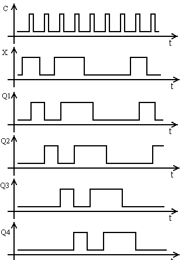

Неверный ответ
На диаграмме видно, что четырёхразрядное число 10112 было записано в соответствующие разряды регистра (1-Q4, 0-Q2, 1-Q2, 1-Q1) после прихода четвёртого тактового импульса. До прихода следующего тактового импульса это число хранится в регистре в виде параллельного кода на выходах Q4-Q1. Если необходимо получить последовательную информацию в последовательном коде, то её снимают с выхода Q4 в момент прихода следующих четырёх импульсов такой режим называется режимом последовательного считывания.
